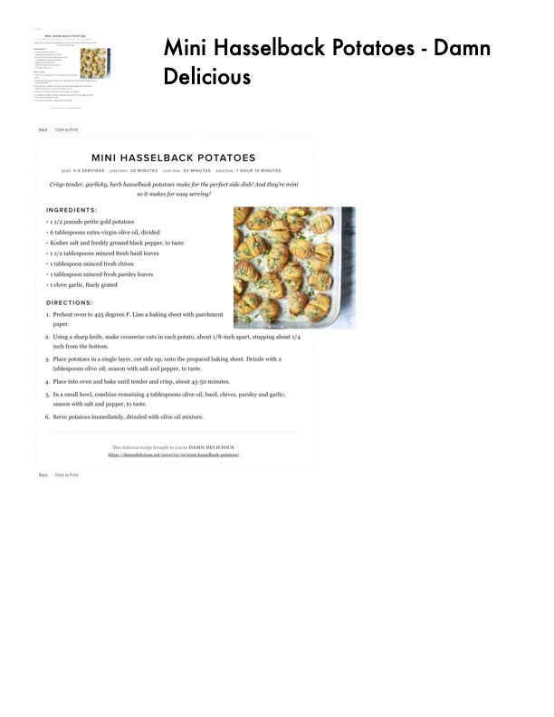

Mini Hasselback Potatoes

Original cookbook page 114
Crisp-tender, garlicky, herb hasselback potatoes make for the perfect side dish! And they're mini so it makes for easy serving! From Damn Delicious.
Prep: 20 minutes • Cook: 50 minutes • Total: 1 hour 10 minutes
Ingredients
- 1 1/2 pounds petite gold potatoes
- 6 tablespoons extra-virgin olive oil, divided
- Kosher salt and freshly ground black pepper, to taste
- 1 1/2 tablespoons minced fresh basil leaves
- 1 tablespoon minced fresh chives
- 1 tablespoon minced fresh parsley leaves
- 1 clove garlic, finely grated
Instructions
- Preheat oven to 425 degrees F. Line a baking sheet with parchment paper
- Using a sharp knife, make crosswise cuts in each potato, about 1/8-inch apart, stopping about 1/4 inch from the bottom
- Place potatoes in a single layer, cut side up, onto the prepared baking sheet. Drizzle with 2 tablespoons olive oil; season with salt and pepper, to taste
- Place into oven and bake until tender and crisp, about 45-50 minutes
- In a small bowl, combine remaining 4 tablespoons olive oil, basil, chives, parsley and garlic; season with salt and pepper, to taste
- Serve potatoes immediately, drizzled with olive oil mixture
Recipe #114 from collection